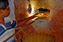
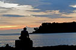

“A warm welcome to our 500-year-old Goan-Portuguese home in the sleepy village of Aldona! Far from the crowded beaches, we have tried to keep alive the culture, cuisine and essence of Goa, and invite you to be a part of our family. We promise to give you a glimpse of the state’s best kept secrets!”
~ Roberto & Raquel, hosts at their Goan-Portuguese home in Aldona
Please email us at untravel@indiauntravelled.com to plan and book your travels.
Overview
Far from the beaches and crowds, deep in the hinterlands of North Goa, sits the charming sleepy village of Aldona. Serenaded by gentle backwaters made by the Aldona River, laced with rice paddies and vast open meadows, and sprinkled with traditional Portuguese homes and old churches, this typical Goan village is where writers like Amitav Ghosh find their inspiration. In the mornings, you can watch the bread man deliver fresh home-baked Goan bread to every house, join families from the neighbourhood on their walk to church, and feel the sense of camaraderie among different communities that epitomizes the culture of Goa
Amaral’s Goan-Portuguese home dates back atleast 500 years, although the exact date of its construction remains unknown. Three generations of the family now live here; Roberto’s grandmother hailed from Russia, and met her Goan husband, a prominent army man, during the Baltic revolution when she escaped to Azerbaijan. They made Goa their home, and their daughter Maria (Roberto’s mother), recalls fascinating stories about their early days and upbringing in Goa. Through the generations, the original Goan façade of their home has been preserved, complete with tiled slate roofs and a living area with small windows opening into the courtyard.
As you become a part of Roberto and Raquel’s family, sample Raquel’s famous brownies and traditional Goan recipes, go on a speed boat ride with Roberto along the pristine backwaters of Aldona, and adopt the susagade (Portuguese: contented) lifestyle of Aldona for a few days.
Discover Goa’s best kept secrets; drive along the river route from Aldona to Panjim, sample traditional Goan food at neighborhood family-run restaurants, stroll along the abandoned Portuguese homes and old river bridges of Aldona, take the ferry across the river to the sleepy Chorao island, row on the lesser known Mayem lake, spot crocodiles and such wildlife along the backwaters… your options are aplenty and Roberto and Raquel’s home is the perfect base to discover a side of Goa that very few experience.
Please email us at untravel@indiauntravelled.com to plan and book your travels.


Stay
Amaral's Goan-Portuguese home retains its original charm, though restoration and preservation efforts have been made by each generation over its 500 years. The entrance is lined with traditional stonewalls and small gates, the house retains its high ceilings and small windows, an open-air courtyard sits in the center and an old well in the backyard.
Accommodation is provided in an outhouse cottage with two double rooms, built in traditional architecture with a slating roof, a sit out, and windows overlooking the wilderness that surrounds the house. The beds, cupboards, and other furniture in the rooms are all refurbished antique furniture that was once part of the main house. Each room has an attached bathroom with urban comforts.
You can hear peacock cries in the early mornings, as well as the orchestra of birds that come to nest in the surrounding trees. Meals are served in the open kitchen and dining area of the main house.
Please email us at untravel@indiauntravelled.com to plan and book your travels.


Food & Drinks
Raquel has a knack for experimental cooking, and whips up sumptuous Goan and continental fare, both vegetarian and seafood, and often experiments with fusion recipes. Her homemade brownies, cakes and jams are to die for!
Breakfast typically consists of fresh Goan breads (among them, polle, pao, and bangle breads), freshly baked patties and bread rolls from the local bakery, homemade jams, eggs cooked to your preference, apple pancakes served with honey, milk and cereal, and tea or coffee. Most ingredients used for cooking are locally grown or sourced.
Lunch and dinner can range from traditional Goan curries, lentils, fish and vegetables, served with hot chapattis or rice, to continental dishes like fresh salads and pastas. Don’t forget to leave space for Raquel’s sumptuous desserts!
Please email us at untravel@indiauntravelled.com to plan and book your travels.
- Breakfast with homemade jams
- Cooking in progress at the kitchen
- Dining at Andron, a neighborhood Goan restaurant in Nachinola
- Fresh Goan breads sourced from a neighborhood bakery
- Spices for sale at Mapusa Friday Market
- Vegetarian delights
Activities
Forget your pre-conceived notions of Goa, and adapt to the slow-paced life of Aldona. While away your days observing the daily activities of the village; neighbours exchanging gossip, families gathering at church, men fishing in the backwaters by the side of the road, local bakeries delivering hot bread, locals enjoying their susagade lifestyle; for them, life’s little joys (like an afternoon siesta) are meant to be savoured!
Lie back on your sit-out and watch birds, indulge in chai and conversation with your host family, go on long walks along the rice paddies and open meadows, read a book by the backwaters, soak in the serenity of Goa’s countryside, write, paint, draw, do everything you always want to do but never get time for.
Offbeat activities at and around the homestay include:
- Visit a local bakery to see traditional earth oven baking
- Visit Aldona fort, church, cemetary and a local fishing bridge
- Ride a speedboat along Aldona's backwaters
- Rent a two wheeler or self-driven car and drive around the state
- Visit Chorao, a sleepy island across the river from Pomburpa
- Try local food at neighborhood family run Goan restaurants
- Boat on Mayem Lake and visit the Aravalem waterfalls
- Cooking classes on prior request.
Please email us at untravel@indiauntravelled.com to plan and book your travels.
- A monsoon evening in Panjim
 Boating on Mayem Lake
Boating on Mayem Lake Ferries at Pomburpa
Ferries at Pomburpa- Observing life in Aldona!
 Panjim's latin quarters
Panjim's latin quarters- Sleepy village life in Thivim
- The backwaters of Aldona by night
- The cemetary at Aldona
- The legend of Christ The King in Chorao
- The serene backwaters of Chorao Island
- Two wheeling around Aldona
 Wildlife along Aldona's backwaters
Wildlife along Aldona's backwaters


{kind=link}
{kind=link}
{kind=link}
{kind=link}
{kind=link}
{kind=link}
{kind=link}
{kind=link}
{kind=link}
{kind=link}
{kind=link}
{kind=link}
{kind=link}
{kind=link}
{kind=link}
{kind=link}
{kind=link}
{kind=link}
{kind=link}
{kind=link}
{kind=link}
{kind=link}
{kind=link}
Costs
Rooms at the Amaral’s Goan-Portuguese Home are priced as follows, per night:
Single / Double occupancy:
1st April - 30th Sept: INR 2500
1st Oct - 15th Dec: INR 3000
16th Dec - 7th Jan: INR 4000
8th Jan - 31th Mar: INR 3000
Price includes breakfast and taxes.
Extra adult: Rs. 800/-
Extra child (6-12yrs): Rs. 500/-
Sharing same room
From 16th Dec - 7th Jan
Extra child(6 - 12 yrs): Rs. 800/-
Sharing same room
Meals
Veg: INR 350 - 400
Non veg (meats): INR 450 - 550
Non veg (seafood): INR 600 - 700
Meal rates are per person per meal
Home Cooked Meals
(On prior intimation)
Cancellation charges:
14 days prior: 50%
7 days prior / No show: 100%
*From 16th Dec - 7th Jan
31 days prior: 100%
14 days prior / No show: 100%
Please email us at untravel@indiauntravelled.com to plan and book your travels.
Location
Amaral’s Goan-Portuguese home is quietly tucked away in the sleepy village of Aldona, in the hinterlands of North Goa. The beaches of Anjuna and Vagator are a twenty minute drive / bike ride away, while the capital city of Panjim is half an hour away.
The nearest domestic and international airports are in Dabolim, near Vasco. Airport pickup can be arranged on prior request.
Best time to visit
Goa is a popular winter destination, but monsoons are really the best time to visit Goa; the terrain is lush, the backwaters are misty, the crowds are still a few months away, and the days are very pleasant to drive or walk around.
Checklist
- Sunscreen, sunhat
- Walking shoes
- Books to read and write, stationery to paint and draw, basically anything you love to do and never get the time for
- Binoculars for bird watching
- Cosmetics you need
- Prescription medicines, if any
- Camera & batteries / charger
Please email us at untravel@indiauntravelled.com to plan and book your travels.
Photo Gallery
- Abandoned Portuguese houses in Aldona
 Amaral's Goan Portuguese house
Amaral's Goan Portuguese house- An old fishing bridge in Aldona
 Freshly baked Goan breads at a neighborhood bakery
Freshly baked Goan breads at a neighborhood bakery- Monsoon delights in Goa
- Seasonal Goan curries served with Goan breads
 Speedboating on the backwaters of Aldona
Speedboating on the backwaters of Aldona- Whizzing around Goa in the monsoon!
- Overview of the main house
 The outhouse cottage with guest rooms at Amaral's House
The outhouse cottage with guest rooms at Amaral's House- The wilderness surrounding the house
 Double room at Amaral's house
Double room at Amaral's house- View of the courtyard from the living room in the main house
 Twin room at Amaral's House
Twin room at Amaral's House- Attached western bathrooms
- Breakfast with homemade jams
- Cooking in progress at the kitchen
- Dining at Andron, a neighborhood Goan restaurant in Nachinola
- Fresh Goan breads sourced from a neighborhood bakery
- Spices for sale at Mapusa Friday Market
- Vegetarian delights
- A monsoon evening in Panjim
- Boating on Mayem Lake
- Ferries at Pomburpa
- Observing life in Aldona!
- Panjim's latin quarters
- Sleepy village life in Thivim
- The backwaters of Aldona by night
- The cemetary at Aldona
- The legend of Christ The King in Chorao
- The serene backwaters of Chorao Island
- Two wheeling around Aldona
- Wildlife along Aldona's backwaters
Please email us at untravel@indiauntravelled.com to plan and book your travels.
Reviews
“My husband and I had a chance to experience the wonderful homestay with Roberto, Raquel and family in Feb 2017. Aldona gave us the flavor of a different Goa altogether, beyond the beaches. We got to see things we had no idea existed in Goa - such as backwaters, rock-cut caves, waterfalls
Aldona is a quaint, serene and laid back Goan village - situated reasonably close to both beaches and these places of sightseeing (provided you have a means of commuting, such as a bike or rental car). Cycling through the village up to the closest fort, visiting a traditional bakery and tasting oven fresh bread were a complete novelty.
The best part was Roberto & Raquel's hospitality - we felt totally at home, as if we were part of their extended family - speaking to their parents, playing with their kids, chatting about anything and everything. A special mention for Raquel's superb cooking & baking, and Roberto's recommendations on restaurants and beaches - both of which turned out to be hidden gems! Our trip was short (2 days) but truly memorable”
~ Garima Gupta Kapila, travelled to Goa in Feb 2017.
“Our stay at Roberto's and Raquel's place in Aldona was very pleasing. A quiet place, a friendly family and a nice environment. But most important the excellent host and hostess!!!” ~ Martin Veul and wife, travelled in January 2016.
“The holiday was worth every mail we exchanged. Everything was super surreal. Counting days to get back to Amarals.
Thank you for everything!”
~ Sadaf Murad, travelled with family in August 2015.
“Staying at Roberto and Raquel's homestay was an amazing immersive experience into the Goan culture.
We were in an accident on our way to them, and did not venture out much. But being home bound in their homestay was a surprise blessing with their warm hospitality and Raquel's fantastic cooking. They took care of us like a family. Expect lots of interesting stories, an adorable family and a perfect home away from home. Recommended to all who wish to experience the TRUE GOA away from the shores and in the calm village heart and to those who truly seek a SUSSEGAD experience!!!!
My heartiest wishes and gratitude to the family until we return very soon. ”
~ Ram Ajhur, travelled in July 2015.
“Roberto and Raquel welcome their guests warmly not only into their homes but also their hearts. I was overwhelmed by their amazing hospitality in spite of them being in the midst of a personal tragedy. My 9 year old was elated to have found such endearing friends and dogs to play with and had to be literally dragged out for any outings! As Roberto regaled us with his inexhaustible supply of anecdotes, Raquel served us wholesome home cooked meals. Her home-made chocolate brownies and jams are something to die for. We tasted several locally made breads like the Katro (Butterfly bread), Poi (Wheat flour based bread) and even had the good fortune to taste the Bol (A traditional goan bread made for distribution during marriages). Roberto took us to visit a local bakery where we had the opportunity to see the breads being freshly made. Piping hot Pois’ straight from the wood fired earthen oven tasted heavenly!
Read Asha's entire experience on her blog here ”
~ Asha, travelled with her family in November 2014.
“The cottage had two rooms, one for ourselves and the other for my in-laws, which suited us fine since we were assured complete privacy that way. The interiors were beautifully appointed – a spacious four-poster bed adorned each room while dark-wood antique furniture gleamed tastefully from the corners. The bathroom was spic and span and the towels freshly laundered.
Roberto had apprised us of the places we would be interested in and the next few days were spent in discovering a completely different side of Goa. We would return dog tired and with immense appetites. Luckily for us, Raquel was a great cook who loved to feed, or rather, overfeed her guests.
On the last day of our stay, the heavens parted its curtains and sheets of rain poured down, washing out our plans for the day. Well, almost. Because, that day turned out to be the most exciting day of our Goa trip. In the afternoon, with the rains abating, Roberto took us to a 50-year old traditional bakery where we witnessed first-hand the preparation of various breads and patties, and also savored steaming hot katro (butterfly) bread, straight from the oven. After that, Roberto took us out on his speed boat which turned out to be a ride ‘of a lifetime’. Something which I will cherish for years to come.
Read more about Sangeeta's trip on her blog here ”
~ Sangeeta, travelled with her family in October 2014.
“Totally unexpectedly amazing experience!
We loved the stay at Amaral's,
thanks for
your
support in booking, coordinating and specially not to forget
finding
such great people.
You gotta be lucky to get such
a mesmerizing experience. Roberto and Raquel are way ahead than expected when it comes to taking care of you. I wouldn't lie but I had become used to 4
star luxury resorts specially in Goa since last few years, but this time I decided to do something different. And it was totally worth it.
Amaral's have a huge Goan-portugeese property in the interiors which keeps the quiet and serene flavor intact, exactly what you go looking for at the time of vacation. Food, Brownies & Cheesecakes cooked by Raquel were mouthwatering and so lovely.
Roberto showed us the Goa which we never thought existed. The backwaters, Kayaking, the ride on the speedboat, jumping in the well everything was so blissful and adventurous that we are still in the after effects of the trip.
I wud have loved spending some more time with the kids. Kids are so so lovely that it really was difficult to leave from that place after 2days. I am going to treasure the moments i spent with them.
Though this trip was
a
short one, my husband and I have loved every bit of it. Thanks to Roberto and family, we have started loving each other a bit more after the holiday ;)”
~Mrunmayee, travelled with her husband in September 2014.
“
This was my first solo trip, and I am so glad it was at the Amaral's. Roberto and Raquel are really warm and friendly. They put me at ease even before I reached their place. They really go out of their way to ensure that you feel completely at home. Mine was a rather short trip, but in just a couple of days I think I learnt more about the Goan way of life than I would have in even a week had I chosen to stay elsewhere. I got a chance to accompany Rachel and Raquel to the local market, the backwaters and even to the Sunday Mass at their church. They let you into their lives and make you feel so much at home that I am already yearning back again soon.
It is an absolutely charming house tucked away in the lush green countryside of Aldona. The house is more than 500 years old but it's been preserved really well. The couple is very passionate about their house and the Goan way of life. You can see it in the way they have restored and preserved the house, the furniture, an eco-friendly way of life, and in the way they talk about the house and what it means to them.
There are so many little things that I remember from my stay - the conversations, grandma's anecdotes, Jess and Donut who are absolutely adorable, little Rafael who is a live wire and interactions with the other guests. Raquel's cooking deserves a special mention. Her kitchen is like a cornucopia of sumptous food. She loves cooking and it shows. I especially loved her cheesecake and the coconut laddoos and just couldn't keep off them!
The tranquility and contentment of the Goan way of life fills you up and it had me completely recharged. At the Amaral's the banter is plentiful, the food bountiful and the atmosphere jovial and serene. I am definitely looking forward to going back again soon.”
~ Anubhuti, travelled solo in July 2014.
“Raquel and Roberto - warm, friendly, ever smiling. A loving couple and perfect host. The soul of this home. They can provide more than a tip or two on how to conserve and preserve. Right from the 500 yr old house, the well that caters to all water needs, exquisite crockery, furniture, wood-work and the artifacts, flora and fauna, the fallen jackfruit tree and the home grown fruits and vegetables; their effort to keep the essence and spirit of Goa alive is more than evident. This family is simply unique in every way. The way they have disciplined their children, the harmony and solidarity among their dogs and cats, the mutual respect for each other. Their warm hospitality and enthusiasm rubs off and you cannot help but become one of them. The effort put in by each one of them in maintaining a huge house and a lifestyle in the most pure and natural way is worth admiration.
This passion and spirit is shared by their children too. Why else would little Antonio hold my hand and take me to the old bathroom to show the fire-fly. How many of us would be BIG-HEARTED enough to share this moment of sheer joy and exuberance with a stranger.
Raquel an excellent cook will make you drool with her mouthwatering prawn curry, chicken xacuti, and chicken vindaloo. Her “Öh So Famous” brownies and the mango cake are to die for (strong enough an evidence coming from a non-sweet-tooth person like me). The whole moong daal and the wild greens cooked by Aai can make any meat lover go vegan. Last but not the least the yummy soup courtesy Maria. Memories of her sitting by the courtyard window, busy with her embroidery come flashing back to me and the smell of veg pulao cooking over wood fire makes me hungry, yet again...
Forget the regular beaches, shacks, water sports and everything else that Goa is generally famous for. Instead, get embraced in the lap of nature and drift away in the tranquility of this little village called Aldona. Kayaking could be one of the best ways to explore the calm and quietude of back-waters. Listen to the sound of silence. For a little adrenaline rush, hop onto the speed boat. Spend your evenings walking down the picturesque road that leads to the Church. Rest up a little at the cemetery, offer a small prayer. Visit the local bakery and don't miss the hot but not-so-spicy mirchi vada pav with hot cuppa-cha at the small stall run by a friendly couple.
My first trip to Goa but most certainly not the last. And, I sincerely hope that the Gurgaon-Goa by road isn't the first and the last either.
Among our many firsts in Goa, celebrating Sao Joao (24th June) was the most memorable one. The festival is dedicated to St. John the Baptist. We were fortunate to observe and experience it in the most traditional manner which included savoring plenty of fruits, tasting fenny and jumping in the well (icing on the cake). It was heart-warming to see local villagers cheering for us each time we jumped. So encouraged was one of our friend that she jumped in the well, not knowing which side was up! Sad we missed the 29th June celebrations. May be next year.
Don't visit the place with an agenda, go in pursuit of aimlessness…”
~ Suman, travelled with her family in June 2014.
“Experiencing the arrival of rains is a beautiful experience anywhere, it becomes an unforgettable one in Goa. I was extremely lucky that I chose to do this at this quaint and idyllic Goan home in the dreamy village of Aldona. This 500-year-old house is a treasure by itself. Its picturesque setting is a nature lover's dream. And the hosts of this home stay, Roberto and Raquel Amaral, are one of those very few individuals who will restore your belief in the goodness of people. They ensured that my fear of being a solo traveller for the first time disappeared within minutes of my arrival. Their picture-perfect family made me feel at home at once and it really didn’t feel like I was far away from my own home. Their enthusiasm to welcome guests into their lives and passion to maintain this home is truly heartwarming.
There are loads of things that you can do here. But I seriously recommend doing nothing. Revel in the wonderful company of the Amarals and get to know their historic home. Enjoy the weather, slow down, read a good book and soak in the culture and pace of this different Goa.”
~ Bhakti, travelled by herself in June 2014.
“All I can say a week after I came back is wow! We had a brilliant time with Roberto, Raquel and family and all of us are dying to go back already.”
~ Shashanka, travelled with friends in March 2014.
“What does Goa mean to all of us; sun, beach, shacks, seafood? It’s actually more than that. If you ever want to see the other side of Goa – tranquil, serene visit the Aldona village and stay at the Amarals' homestay… The 500 year old Portugal styled house is a home to not only to the friendly Amaral family but several trees, birds and two lovely dogs (forgot their names but they are adorable and had an experience chasing them back home with Antonio and was rewarded with a coalgate toothpaste).
The place is far away from the bustling rushed life and brings you closer to yourself and opens the gates to the new Goa that you have never heard off. You will wake up to the chirping of colorful birds and rays passing through your window sill. Walk through the garden area basking yourself under the ray of the sun. The green pastures will walk you to the Aldona church, back waters and the nearby bakery.
Though we had a short stay we were overwhelmed with the hospitality of Roberto and Raquel. During our stay we always felt we were staying in our friend’s house. The lovely chat with the family during our meals gave some insight to local politics. And our neighbor was a lovely young chap Victor, on the first night he fooled me to have a Fenny shot …my stomach is still burning!
Roberto and Raquel are doing a commendable job by giving a new experience to all who know only one side of Goa. We went to Goa to experience something new and thanks to India Untravelled we came back with an unforgettable experience of the new Goa at Aldona.”
~ Raghuvendra, travelled with his wife in March 2014.
“A truly wonderful experience.
I was wanting to celebrate the new years eve in a different way this time and little did i know it would turn out to be so different. New Years in a place in Goa away from the maddening crowd full of greenery,a whole lot of good food and with the most amazing family.
The place is beautiful -the greenery and the peace surrounding the house makes you not want to go back to the busy urban life.The authentic goan spread served at their home was awesome-right from the different seafood preparations to the yummy cookies and brownies baked at home.Hosts Roberto and Raquel are extremely warm,treating you more like family than guests so much so that i just did not want to step out of their house.Went as a solo traveller but they ensured that i am amidst amazing company all the time.Saved my plans for exploring Aldona for next time as i just couldnt get enough of the Amarals.”
Thank you India Untravelled for introducing me to such a lovely side of Goa !!!
~ Sonam, travelled solo in December 2013.
“Had a wonderful time with the Almarals. Right from the moment I was picked up by the ever so friendly cabbie, Dilip to the warm hospitality of Rachquel and Roberto Almaral , everything was just perfect. They along with Mrs Amaral(Roberto's mother) made sure I was comfortable though and through. It would be injustice not to mention Rachquel's fabulous cooking. Wanted to experience the real Goa life away from the beach,crowd of mainstream Goa and this was the perfect getaway.
Thanks to Roberto and Rachquel Almaral and the entire family and thanks to you guys too for this wonderful experience.”
Thank you India Untravelled for introducing me to such a lovely side of Goa !!!
~ Sumali Sanyal, travelled in June 2016
Please email us at untravel@indiauntravelled.com to plan and book your travels.
Responsible Travel
Over the years, the Amaral family has worked hard to preserve their Goan-Portuguese heritage and culture. The current generation’s restoration work aims at restoring the original heritage, architecture and old-world charm of their house. Solar geysers are used to heat water, and refurbished antique furniture is used in the guest rooms. A concentrated effort is made to preserve the wilderness around, and grow or source organic vegetables, fruits and ingredients.
Roberto and Raquel aim to re-introduce guests to the culture, history, charm, and lifestyle of Goa, which is slowly being eroded by mass tourism within the state. They also actively participate in village affairs, and try to effect better environment and waste management.
Below are some tips to travel responsibly while in Aldona:
- Pack your bags with environmentally friendly things. Carry as little plastic as possible.
- Do not leave behind any non-biodegradable waste. Carry batteries and other toxic waste back to the cities where waste management is in place.
- What you wear has an impact – environmentally and culturally – dress ethically and appropriately.
- Respect the local culture and refrain from physical intimacy in public places.
- Carry a good water bottle. Pure water dug from the earth is available at the farm for re-filling your bottles. Refrain from buying numerous plastic mineral water bottles.
- Local food is great. Try it as much as possible and avoid packaged food. Ask for modifications in the food according to your taste, instead of wasting it.
- Avoid excessive consumption of alcohol and refrain from drugs, especially in public places.
- Seek permission before photographing people, so their privacy is respected.
- Do not pluck any medicinal plants & flowers, and do not disturb the wildlife.
Please email us at untravel@indiauntravelled.com to plan and book your travels.
Please email us at untravel@indiauntravelled.com to plan and book your travels.